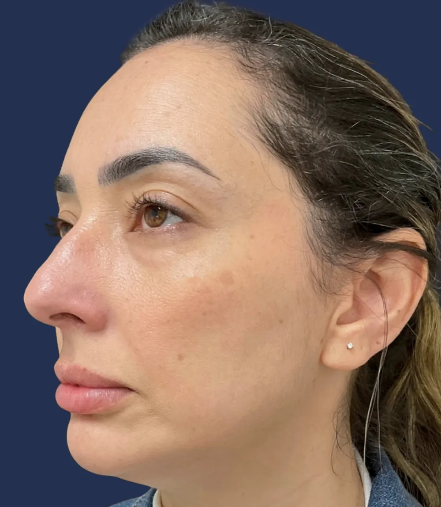
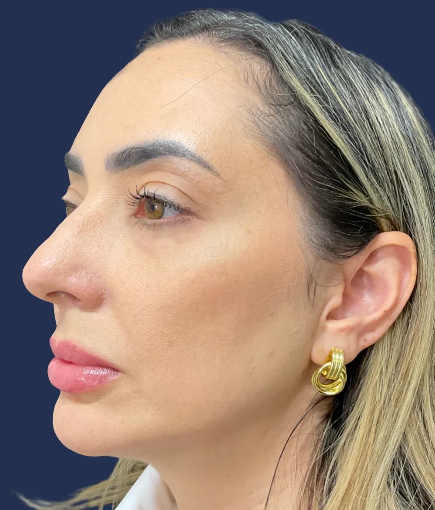
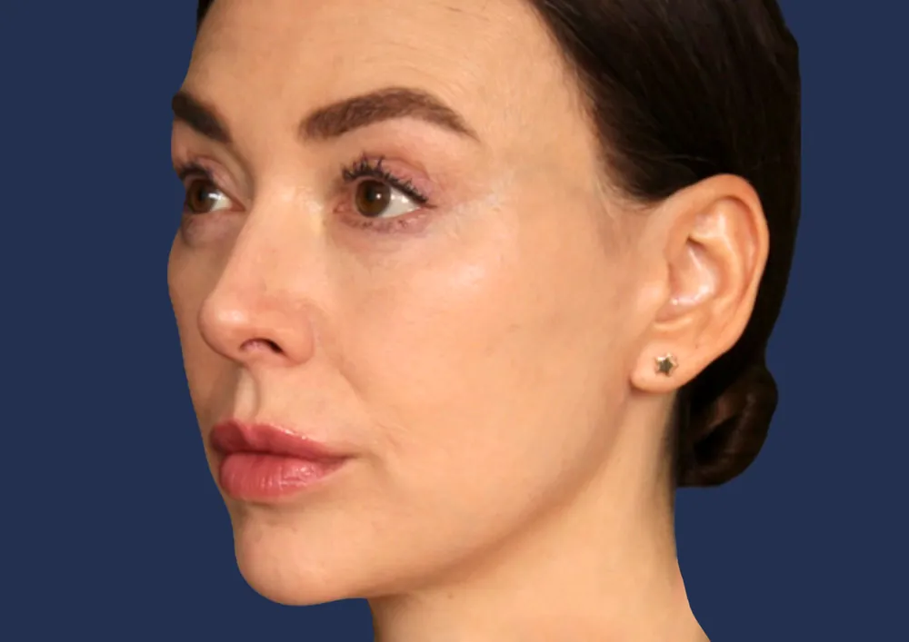
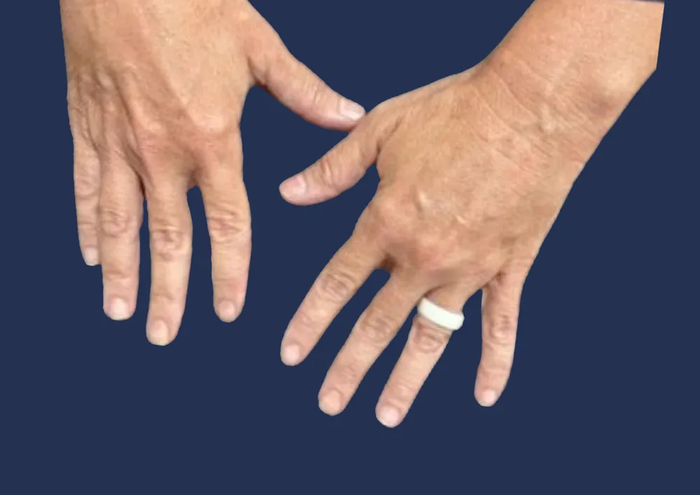
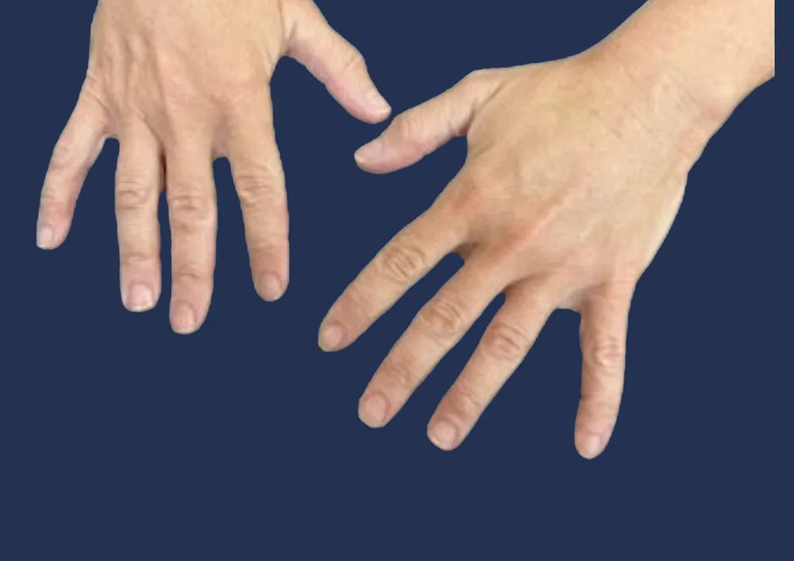

For the fat curious
Some things are worth holding on to.
The way you see yourself is one of them.
There's something about looking in the mirror and noticing little changes. Maybe your cheeks aren't quite as full. Maybe your face looks a little more tired than you feel. Nothing dramatic. Just subtle changes that add up over time.
And while we spend so much time talking about our skin, sometimes what's changed isn't the skin at all. It's what's beneath it.
Let's talk about fat.
Facial fat plays an essential role in giving our faces their natural contours, softness, and fullness. Beneath the skin, fat pads provide structural support, helping maintain the smooth transitions that contribute to a naturally refreshed appearance.
Over time, whether through aging, weight loss, or other factors, these fat pads can diminish or shift, changing the contours we've come to recognize as our own.
Meet Lipoderma.
What if the answer to lost fat was simply... fat?
Lipoderma offers a different approach to natural-looking rejuvenation, using human adipose tissue to help restore lost fat and bring back the natural contours, softness, and fullness that make your face uniquely yours.
The little details that make a face familiar. The ones you've seen in the mirror a thousand times and never really thought twice about. Until one day, you do.
Restore What's Yours™
Hear it from patients.
Patient testimonials and quotes to come.
Fat has a glow-up era, too.
What to expect with Lipoderma
Lipoderma provides immediate volume, but the journey doesn't stop there. As the implanted tissue remodels, results continue to evolve over time.
Some patients may notice a temporary softening in fullness as the implanted tissue gradually remodels and is replaced by their own tissue. Over time, this natural process contributes to the evolving appearance of the restored area.
Think of the first 3–6 months as your fat's glow-up era. Your results are still evolving, and your provider may recommend a touch-up during this time to help optimize fullness and contours.
- Day 1Immediate volume
- Months 1–3Gradual remodeling
- Months 3–6Your own tissue takes over
Fat looks good on you.
Before & afters

Before
After
After
Before
AfterBefore you fill. Let’s talk fat.
| Traditional aesthetic products | Fat-based restoration | ||||
|---|---|---|---|---|---|
| Comparison | HA Fillers | BiostimulatorsSculptra / Radiesse | Autologous Fat Transfer | Renuva | Lipoderma |
| What’s it made of? | Hyaluronic acid gel | PLLA or calcium hydroxylapatite (CaHA) | Patient’s own fat, approximately 90% adipocytes / 10% ECM | Donated adipose-derived matrix, 100% ECM | Donated human adipose tissue, approximately 90% adipocytes / 10% ECM |
| How does it work? | Adds gel-based volume | Stimulates the body’s natural collagen production over time | Transfers the patient’s own fat to restore volume | Provides a matrix that supports tissue remodeling | Replaces fat with fat, followed by gradual tissue remodeling and host tissue replacement |
| When will I see results? | Immediate | Gradual, over several weeks to months as collagen production increases | Immediate volume, with results evolving over several months | Gradual, over several months | Immediate volume, with results evolving over several months |
| How long does it last? | Typically 6–18 months | Typically 12–24 months, depending on product | Potentially long-lasting, depending on fat survival | Up to 12–24 months anticipated | Up to 12–24 months anticipated; longer-term outcomes still being monitored |
| Will I need more than one session? | Maintenance treatments are common | May require a series or maintenance | Additional fat transfer may be needed | Additional treatment may be recommended | Reassessment at 3–6 months; touch-up may be recommended |
| Does it require liposuction? | No | No | Yes | No | No |
Find a provider.
Lipoderma is placed only by licensed physicians trained on the product.
Join The F** Club.
Membership has its perks.